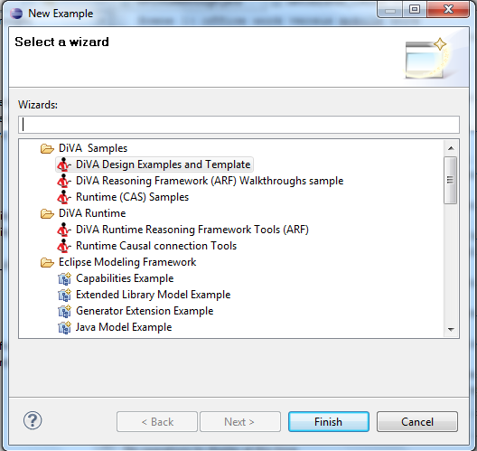

The easiest way to get started with the DiVA studio is to try out the samples provided.
There are several sets of samples provided in your eclipse.
To install them, click on File > New > Examples and select the sample you wish to try.

The start samples are in DiVA Design Examples and Template and contains various simple case studies that can be used with the studio tools.
The other samples are for more complex use case studies of a given component.